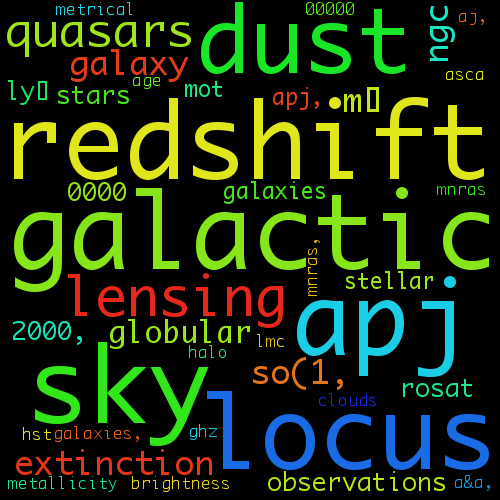
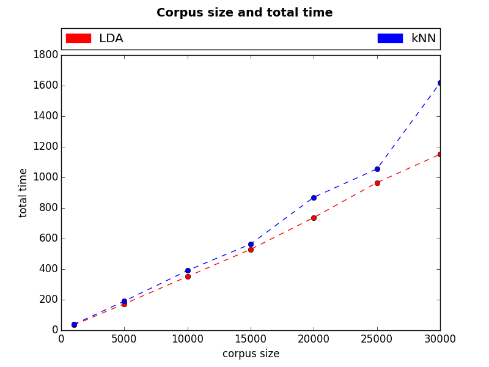

Improving learning resource recommendations for students
Created by Cathal Geoghegan / @_Kotl
Introduction
Investigating the use of machine learning algorithms to generate recommendations from an educational corpus.
Focusing mainly on:
- LDA,
- k-NN
- Word2Vec.
- Temporal Performance
- The quality of recommendations
On a collection of 30,000 papers from arXiv.
Motivation
The internet has proved an invaluable tool in providing access to knowledge. However the volume of data is far too large to be finely catalogued by humans. For this we need to use machines to automate the task.
The overall aim of this is to try and choose a model to use when generating recommendations for students.
Outline
- What is machine learning
- What is currently being done in this field
- What I hope to achieve with my FYP
- Preliminary results
- Questions
Machine Learning
Machine learning is an interdisciplinary field dedicated to the study of self learning systems. There are three types of machine learning.
- Supervised Learning
- Reinforced Learning
- Unsupervised Learning
Supervised Learning
The machine is fed inputs x1, x2...xZ, desired outputs y1, y2...yZ and then tries to create a model which fits inputs to outputs.
A large number of training examples are required to properly train a supervised model. For this reason I choose not to use this approach.
Reinforced Learning
The machine interacts with the environment and produces actions a1, a2...aZ which affects the environment. The machine then receives rewards r1, r2...rZ and then tries to learn to produce actions which maximises future rewards.
Like supervised learning this would require a large number of training samples to produce a working model and was not used in this project.
Unsupervised Learning
The machine is fed inputs x1, x2...xZ and tries to build a model that finds patterns in the data. No desired outputs nor rewards are needed.
This type of machine learning is the focus of my project. Each of the algorithms used builds a probabilistic model of the data which it can then use for inference.
State of the Art
- 1990, Deerwester introduced the concept of latent semantic indexing.
- 2003, Blei and Ng built upon the work done previously by Deerwester to discover Latent dirichlet allocation.
- 2008, Knowledge and Information Systems listed k-NN as one of the top data-mining algorithms.
- 2014, Word2Vec released as an efficient algorithm to calculate vector representations of words.
Technology
Gensim: a python library to conduct unsupervised semantic modeling of plain text.
Technology
Annoy: a C++/Python library created by Spotify to calculate approximate nearest neighbors.
Main objective
Can we identify the best algorithm for learning resource recommendations?
Objective 1
Build a corpus of 30,000 academic papers to act as a proxy for learning resources.
Objective 2
Evaluate the temporal performance of each of the algorithms.
Objective 3
Rank the quality of recommendations generated by the algorithms.
Objective 4
Compare the results to available meta-data.
Preliminary Results
LDA
A model where documents contain a mixture of topics.
Topics are a mixture of word probabilities.
Model assumes that the topics are generated first and then the documents are generated from the topics.
Inferring the topics is a reversing of the generation process.
Topic Samples
Topic Samples
Topic Samples

Topic Samples
Topic Samples

k-Nearest-Neighbors
A classification algorithm that finds groups of k objects nearest to an input value.
Assumes that objects that are close in feature space are the same.
Suffers from the curse of dimensionality when the features space is large.
Spotify's Annoy approximate-Nearest-Neighbor library was used for k-NN queries.
Word2Vec
An algorithm that uses unsupervised neural-networks to learn the meaning behind words.
Uses two learning algorithms, continuous bag of words or a continuous skip-gram.
Can use algebraic operations on the resulting word vectors to find words close in word vector space.
Operations
vector('king') - vector('man') + vector('woman') -> 'queen'
vector('biggest') − vector('big') + vector('small') -> 'smallest'
vector('Berlin') - vector('Germany') + vector('France) - > 'Paris'
Comparison
